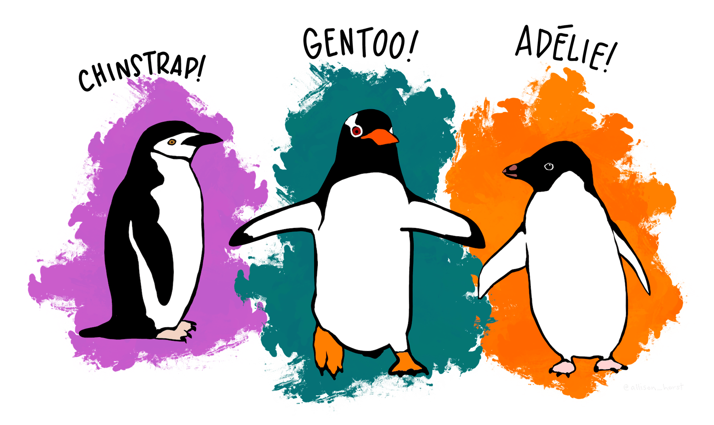
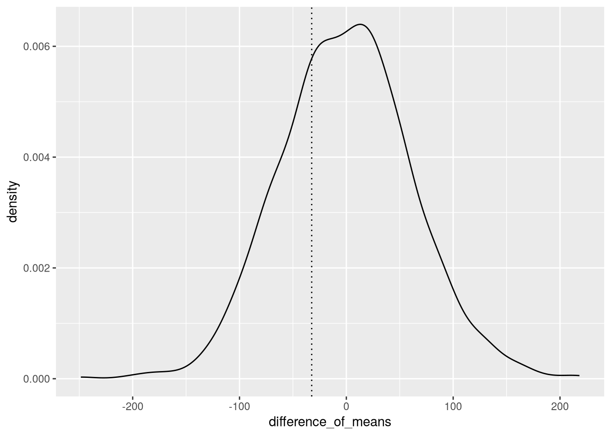

library("dplyr")
# This function computes the difference in sample means for Adelie and
# Chinstrap penguins.
difference_of_means_ac = function(data) {
adelie = filter(data, species == "Adelie")
chinstrap = filter(data, species == "Chinstrap")
mean_a = mean(adelie$body_mass_g, na.rm = TRUE)
mean_c = mean(chinstrap$body_mass_g, na.rm = TRUE)
mean_a - mean_c
}8 Hypothesis Tests
NoteLearning Goals
After this lesson, you should be able to:
- Explain the purpose of a hypothesis test
- Describe the characteristics of a testable hypothesis
- Construct a testable hypothesis for a research question
- Explain what null and alternative hypotheses are
- Explain what a p-value is
- Explain what it means for an effect to be statistically discernable
- Use a permutation test to test a hypothesis
ImportantRequired Packages
This chapter uses the following R packages:
- dplyr
- ggplot2
- palmerpenguins
- purrr
For a refresher about how to install and load packages, see the Packages section of DataLab’s R Basics workshop reader.
Statistics help us make informed decisions about the world. Sometimes the goal is to evaluate whether a particular belief or hypothesis is true. We can weigh the evidence in a dataset for (or against) a hypothesis with a statistical procedure called a hypothesis test. Hypothesis tests take many forms and are often tailored to specific problems. Nonetheless, all hypothesis tests are based on a general framework. This chapter introduces the hypothesis testing framework as well as a specific kind of hypothesis test that’s broadly applicable because of its minimal assumptions.
8.1 Forming Hypotheses
The first step in hypothesis testing is forming a suitable hypothesis. The best time to come up with a hypothesis is before you collect the dataset you’ll use to evaluate it. If the dataset has already been collected, the best time is before doing any exploration. This way the dataset serves as a fair, independent sample for testing the hypothesis.
Warning
When you form a hypothesis based on patterns you see in a dataset, no matter how slight, using the same dataset to test the hypothesis will overstate the strength of the evidence.
To test a hypothesis formed by exploring a dataset, you must collect an entirely new dataset from the same population.
Ideally, your hypothesis is based on a clear conceptual model rooted in personal experience and expert knowledge about the topic. This knowledge may include prior work with other datasets. A good way to check is to write an explanation of your hypothesis and why you believe it might be true. Ask yourself whether a peer would find your argument convincing enough to warrant further investigation, and if not, adjust the hypothesis.
Important
We form hypotheses about a population and use hypothesis tests to test them on samples. If you can collect data for the entire population, there’s no need to conduct a hypothesis test—the sample statistics are the population statistics!
In order to test a hypothesis with data, there are two requirements. First, the hypothesis must relate to something that can be measured. If you can’t measure it, you can’t test it (although in some cases you can choose and test a proxy). If you already have a dataset, make sure that its features allow asking the kinds of questions you want to ask.
Second, the hypothesis must be specific and falsifiable. Data and statistics can’t help with a hypothesis that’s too broad or impossible to disprove. Try to translate your hypothesis into a statement about a population parameter.
As an example, suppose you study trout in California rivers. You suspect that the trout population in one river increased over the past year. You’re not able to conduct a complete census of the trout population, so you collect counts at specific locations and times. These counts are the feature you can use to address the hypothesis. There are several ways to make the hypothesis specific enough to test; a simple one is to ask whether the mean counts in the current year (averaging over locations) are higher than the mean counts in the previous year.
8.2 The Framework
Every hypothesis test consists of the following steps:
Describe the hypothesis in terms of two competing claims. The first, called the null hypothesis, should be a reasonable default or baseline. The second, called the alternative hypothesis should be the hypothesis you believe might be true and want to test. The null and alternative hypotheses must be mutually exclusive, meaning only one can possibly be true.
Identify a test statistic related to the hypothesis with a known sampling distribution. Many hypothesis tests use the sample mean, since its distribution is well-understood (Section 7.6). Compute the statistic on the sample.
Assume the null hypothesis is true. Use the sampling distribution to compute the probability of getting a statistic at least as unlikely as the sample statistic. For most hypothesis tests, we interpret “unlikely” as extreme (farther out in the distribution’s tails). This probability, called a p-value, is a measure of evidence against the null hypothesis.
If the p-value is very small, the sample statistic is unlikely under the null hypothesis. In this case, we say that the result is statistically discernable and reject the null hypothesis. Otherwise, the sample statistic is compatible with the null hypothesis, so we do not reject it.
In step 4, the convention is to choose a specific threshhold for “very small,” called the discernibility level. This is usually denoted by the Greek letter \(\alpha\) (alpha). The discernibility level is the approximate probability of rejecting the null hypothesis when it’s true (a false positive). Most statistical software defaults to \(\alpha = 0.05\) (5%), but you should think carefully about what an acceptable false positive rate is for your work.
Important
This framework only allows us to test whether the null hypothesis is unlikely!
A small p-value does not guarantee that the alternative hypothesis is correct if multiple alternatives are possible. Along the same lines, a large p-value does not guarantee that the null hypothesis is correct, nor that the alternative hypothesis is incorrect.
NoteNote: Statistical Significance
“Statistically significant” is another term for for statistically discernable. We prefer the latter, because somtimes a result is statistically discernable but not important or meaningful in any real-world sense. Calling such a result “significant” can easily give the wrong impression.
NoteNote: Power
After learning about the discernibility level, you might wonder: what about the probability of failing to reject the null hypothesis when it’s false (a false negative)?
Statisticians usually denote this probability by the Greek letter \(\beta\) (beta). Its inverse, \(1 - \beta\), is called the power of the hypothesis test. The power is the approximate probability that the test (correctly) rejects the null hypothesis when it’s false. Hypothesis tests are often designed to maximize the power \(1 - \beta\) for a given discernibility level \(\alpha\).
Power depends on the sampling distribution(s) under the alternative hypothesis. It’s usually impossible to compute the exact power of a test, because the alternative hypothesis depends on unknown population parameters rather than specifying them. That said, for many tests, we can estimate power by choosing reasonably likely parameter estimates (for example, based on other data).
Power also depends on sample size. If you plan to collect a dataset and carry out a hypothesis test, you should take power estimates into account when selecting the sample size. An experiment that uses an underpowered hypothesis test is a waste of resources.
8.3 Dataset: Palmer Penguins

As a source of examples, we’ll use the Palmer Penguins dataset, which was collected by Dr. Kristen Gorman at Palmer Station, Antarctica. Alison Horst packaged the data for public use. The package is called palmerpenguins.
Important
Install the palmerpenguins package now if you didn’t earlier.
Load the package with the library function to access the dataset, which is called penguins.
Warning
In recent versions of R, the penguins dataset is built-in, but has slightly different column names. If you want to follow along with this reader, make sure to use the dataset from the package rather than the built-in dataset.
The dataset consists of observations of 344 penguins from 3 different species: Adélie, Chinstrap, and Gentoo. The measurements include flipper length, bill width, sex, and body mass.
8.4 Permutation Tests
We can use the Palmer Penguins dataset to explore how hypothesis tests work in practice. Suppose we hypothesize that Adélie and Chinstrap penguins have different mean body masses. Let \(\mu_a\) denote the population mean body mass for Adélie penguins and \(\mu_c\) denote the same for Chinstrap penguins. Then we can formalize our hypothesis in two parts:
A null hypothesis \(H_0: \mu_a = \mu_c\) that the means are equal. Another way to write this is \(H_0: \mu_a - \mu_c = 0\), that the difference in means is 0.
An alternative hypothesis \(H_A: \mu_a \neq \mu_c\) that the means are not equal.
With the dataset, we can estimate \(\mu_a - \mu_c\) with the difference of sample means \(\bar{x}_a - \bar{x}_c\). In R, we’ll first set up a helper function to compute the sample mean of each group and then compute their difference:
We can use the function to estimate the difference in mean body mass for Adélie and Chinstrip penguins:
library("palmerpenguins")
penguins_ac = filter(penguins, species %in% c("Adelie", "Chinstrap"))
diff_ac = difference_of_means_ac(penguins_ac)
diff_ac[1] -32.42598The difference is not zero, but that could be due to the sample rather than a property of the entire population. But let’s assume the null hypothesis is true, so the two species have the same mean body mass. Is it likely that a sample would have a -32.426 difference? To address this, we need to know the sampling distribution of the difference.
Under the null hypothesis, the two species are indistinguishable in terms of mean body mass. So if we resample by permuting the species, the difference in sample means should still be close to 0. By computing many resamples, we can approximate the sampling distribution of the difference when the null hypothesis is true. Then we can determine whether the difference for the original sample is likely. This procedure is a kind of hypothesis test called a permutation test or randomization test.
NoteAlgorithm: Permutation Test
Suppose we want to test a hypothesis about the relationship between two features, and we can quantify the hypothesis with a statistic. To test the hypothesis with a permutation test:
- Construct a new sample by permuting one of the two features. Permuting means shuffling or sampling without replacement.
- Compute the statistic on the new sample.
- Repeat steps 1-2 to compute a collection of \(k\) statistics.
- Use the collected statistics to estimate the sampling distribution.
- Use the sampling distribution to estimate a p-value for the statistic computed on the original sample.
Depending on the size of the original sample, it’s sometimes possible to compute all permutations (without any random sampling). Then we say the test is exact.
Let’s work through a permutation test for the Adélie and Chinstrap penguins. In R, we can use the sample function to permute a feature. We’ll also use the purrr package’s map function to repeat the permutation step:
library("purrr")
set.seed(12099)
# Resample `species` by shuffling (no replacement).
perm_resamples = map(seq_len(1000), \(i) {
samp = penguins_ac
samp$species = sample(samp$species)
samp
})Next, we need to compute the difference of sample means on each new sample. For instance, on the first new sample:
difference_of_means_ac(perm_resamples[[1]])[1] -47.35586We can use the purrr package again to repeat this for all of the new samples:
perm_diffs_ac = map_dbl(perm_resamples, difference_of_means_ac)This collection of statistics enables us to estimate the sampling distribution. We can make a density plot and mark where the original sample statistic lies:
library("ggplot2")
ggplot(data.frame(difference_of_means = perm_diffs_ac)) +
aes(x = difference_of_means) +
geom_density() +
geom_vline(xintercept = diff_ac, linetype = "dotted")
Based on Figure 8.2, the original sample statistic is fairly close to the center of the distribution. In other words, it’s a plausible difference even if the null hypothesis is true.
To compute a p-value, we need to estimate the probability of getting a value at least as extreme as the original sample statistic. We can use a cumulative distribution function, a function that estimates the cumulative probability of all values up to a given value, to do this. Since we don’t know the mathematical form of the sampling distribution, we’ll use an empirical cumulative distribution function (ECDF), an estimate based on the collection of statistics we computed by permuting.
R’s ecdf function computes an ECDF based on a sample. The ECDF is itself a function, which we can use to estimate the p-value:
ecdf(perm_diffs_ac)(diff_ac)[1] 0.3So under the null hypothesis, there’s a roughly 30% chance of getting a more extreme (more negative) difference than -32.426. At level \(\alpha = 0.05\), the difference in means is not statistically discernable. We fail to reject the null hypothesis. It’s still possible that Adélie and Chinstrap penguins do have different mean body masses, but we would need to collect additional data to prove it.
Warning
The conclusion of a hypothesis test is not guaranteed to be correct, and other sources of knowledge about the hypothesis should also be taken into account!
NoteNote: Classical Hypothesis Tests
Like the bootstrap algorithm, permutation tests only became possible in the age of computing. Before that, statisticians developed a wide variety of hypothesis tests based on mathematical approximations. Many of these rely on the CLT (Section 7.6).
We don’t cover classical hypothesis tests here (beyond the framework in Section 8.2) because there are so many different kinds—they’re usually tailored to specific kinds of hypotheses and statistics.
Permutation tests are superior to classical hypothesis tests in most situations because they make fewer assumptions. However, they do have a few disadvantages:
- They’re only suitable for testing datasets where the observations are exchangeable under the null hypothesis. In other words, datasets where permuting won’t break some other inherent structure. For instance, permuatation tests are usually not appropriate for testing time series.
- They take longer to compute. This is usually only a problem if the sample size is very large.
NoteSee Also
For a more thorough explanation of hypothesis tests and permutation tests, as well as many more examples, see Introduction to Modern Statistics (Çetinkaya-Rundel and Hardin 2024). This book also presents some classical hypothesis tests.
In R, there are built-in functions to carry out classical hypothesis tests. The coin package provides functions to carry out permutation tests.